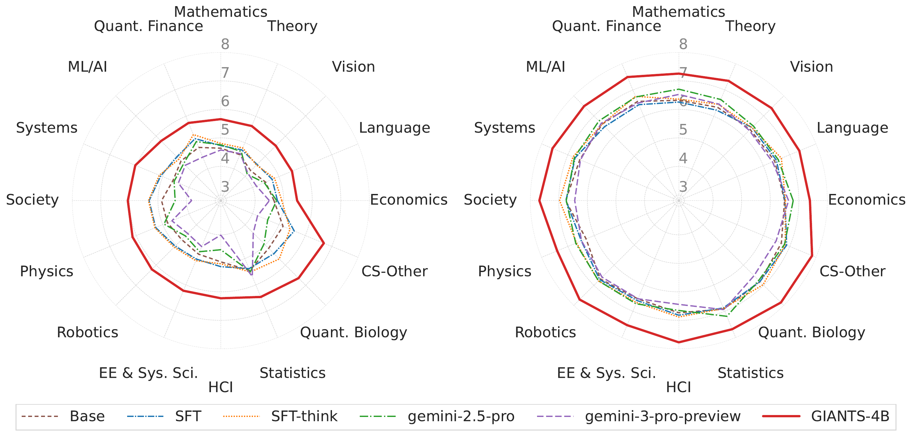
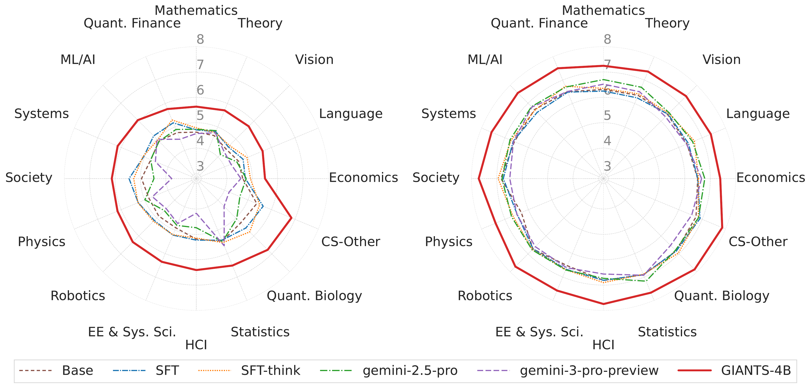
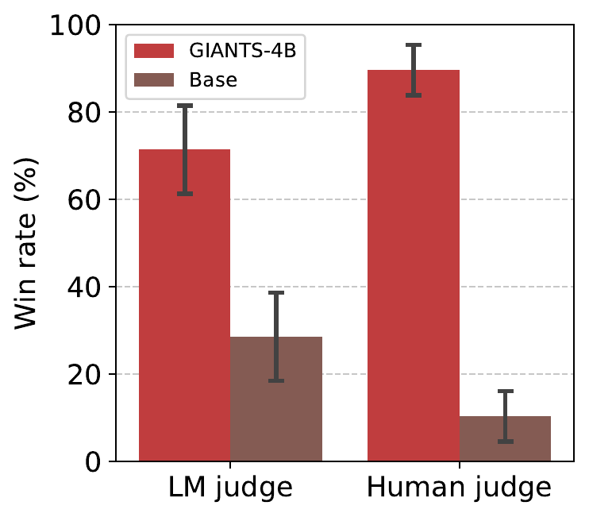
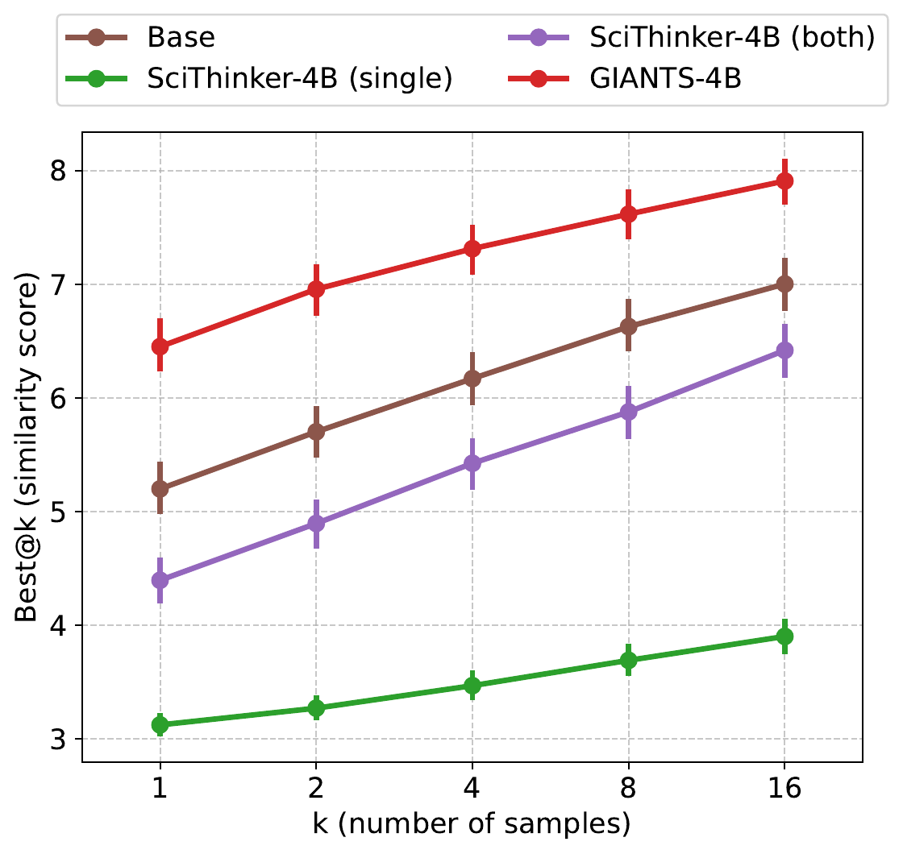
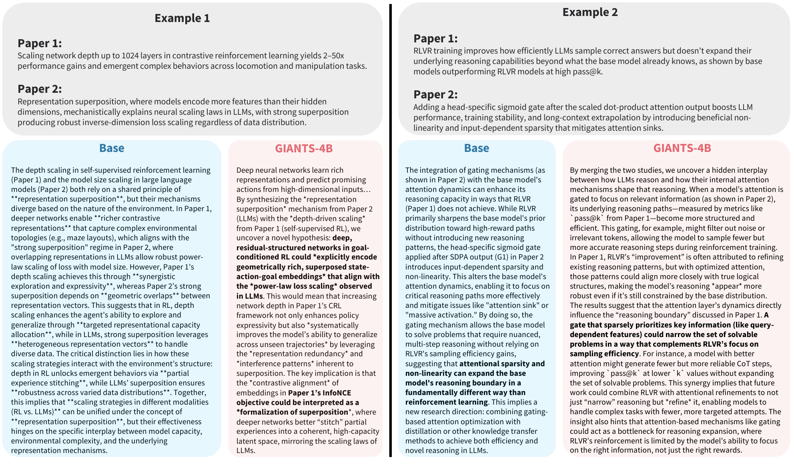
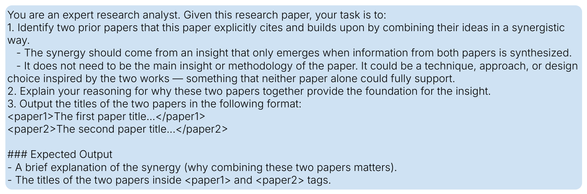
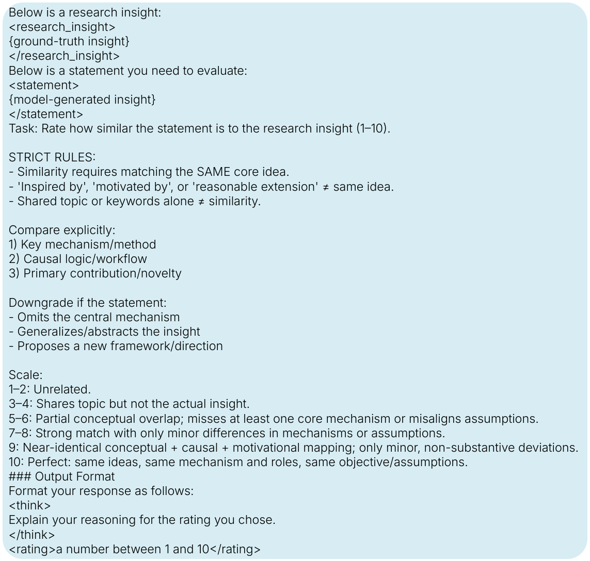

Scientific progress often comes from recombining earlier ideas into a sharper new contribution. GIANTS studies whether language models can anticipate that next step. We introduce insight anticipation, a literature-grounded task in which a model receives summaries of two parent papers and must predict the core contribution of a downstream paper that builds on them. To evaluate this setting, we construct GiantsBench, a benchmark of 17,839 parent-child tuples spanning eight scientific domains, and score generations with an LM judge whose ratings correlate with expert evaluations. We also present GIANTS-4B, a 4B-parameter model trained with reinforcement learning to optimize semantic similarity to the target insight. Despite its smaller open architecture, GIANTS-4B outperforms both supervised baselines and larger proprietary models. We release the dataset, models, and code to support future work on automated scientific discovery.
The paper reframes automated scientific discovery as a targeted synthesis problem. Rather than asking a model to brainstorm in the abstract, it asks whether the model can infer the next scientific step once the relevant intellectual lineage is fixed.
Each example contains summaries of two parent papers as input and a standalone description of the downstream paper's key contribution as the target. This isolates insight generation from the harder retrieval problem of deciding which prior work matters.
Two parent-paper summaries that define the scientific starting point.
A self-contained statement of the downstream paper's core contribution.
A 1-10 similarity rating comparing the generated insight to the ground-truth target.
GiantsBench is built from 17,839 arXiv papers updated between May 23, 2007 and January 23, 2026, filtered to retain papers with at least two citations. For each downstream paper, an LM identifies two cited parents whose ideas are combined synergistically, rewrites that synergy into a standalone target insight, and summarizes the parent papers into compact model inputs.
Training is restricted to Language papers before the July 1, 2023 cutoff, while evaluation uses later papers across domains. The paper also reports a stricter Test-unseen-parents split, where evaluation parent papers never appear during training.

Human validation of the judge. LM similarity scores track expert ratings well, with Spearman rho = 0.761 (p < 0.001), supporting their use for both evaluation and reward design.

Task prompt. The model receives two parent-paper summaries and is asked to generate a specific, self-contained insight that emerges only when the two are considered together.
GIANTS-4B starts from Qwen3-4B and compares three training strategies: direct supervised fine-tuning on the target insight, supervised fine-tuning with synthetic reasoning traces, and reinforcement learning that optimizes semantic similarity to the downstream contribution.
The main takeaway is that imitation alone is not enough. Plain SFT underperforms, SFT-think yields only modest gains, and the strongest model comes from GRPO-based reinforcement learning with LM similarity as the reward. Training uses Gemini-2.5-Flash as the reward model, while final evaluation is reported with separate judges, including Gemini-3-Pro and Qwen3-14B.
Directly distilling the answer, even with synthetic reasoning traces, does not reliably teach the model how to synthesize a new downstream insight.
GIANTS-4B samples candidate insights, scores them by semantic alignment with the real downstream contribution, and updates toward generations that better match it.
Two findings stand out: native insight anticipation is difficult even for frontier LMs, and reinforcement learning closes much more of the gap than supervised imitation. GIANTS-4B leads on both the full benchmark and the stricter unseen-parent split.
| Model | Full Test | Unseen Parents |
|---|---|---|
| Qwen3-4B | 4.75 | 4.87 |
| SFT | 5.01 | 5.10 |
| SFT-think | 5.05 | 5.11 |
| Gemini-2.5-Pro | 4.65 | 4.78 |
| Gemini-3-Pro | 4.43 | 4.57 |
| GIANTS-4B | 5.97 | 6.11 |
Overall similarity scores summarized from the appendix tables. Higher is better.

Main benchmark results. Across domains, GIANTS-4B outperforms the Qwen3-4B base model, both supervised baselines, and proprietary alternatives under both Gemini-3-Pro and Qwen3-14B judges.

Unseen-parent generalization. The same ordering holds when evaluation is restricted to parent papers never seen during training, suggesting the model is learning transferable synthesis behavior rather than memorizing seen lineages.

Human and LM preference on similarity. In head-to-head comparisons against the base model, GIANTS-4B wins 71.4% of the time under the LM judge and 89.7% of the time under human evaluators.

Feasibility human evaluation. Relative to the base model, GIANTS-4B produces ideas with comparable engineering complexity but clearer scope and stronger conceptual clarity.

Inference-time scaling. GIANTS-4B stays ahead as more candidate insights are sampled, outperforming the base model and SciThinker-4B variants across best@k.
| Domain | Win Rate |
|---|---|
| HCI | 76% |
| Theory | 75% |
| non-CS | 73% |
| CS-Other | 71% |
| ML/AI | 70% |
| Society | 62% |
| Language | 61% |
| Vision | 45% |
| Systems | 39% |
| Robotics | 37% |
| Overall | 62% |
Independent quality evaluation. Under the SciJudge-30B framework from Tong et al. (2026), GIANTS-4B achieves a 62% overall win rate over the base model.
The qualitative examples make the same point in a different way. The base model often either restates the parent papers or makes overconfident leaps beyond the evidence, while GIANTS-4B stays closer to the source material and surfaces more concrete, mechanistic connections.

Example generations. On the showcased NeurIPS 2025 lineage examples, GIANTS-4B identifies more grounded cross-paper mechanisms and avoids the unsupported extrapolation seen in the base model.
Insight anticipation is implemented with a compact but deliberate prompt pipeline: identify two parent papers, rewrite their synergy as a standalone target insight, generate candidate insights from the parent summaries, and score the generations with an LM judge.

Parent identification prompt. Recovers two cited works whose ideas combine to support the downstream contribution.

Rewrite prompt. Turns the raw synergy explanation into a clean, self-contained target insight.
Generation prompt. Defines the core insight-anticipation task used for both training and evaluation.

Judge prompt. Produces the similarity score used for evaluation and as the reinforcement-learning reward.
This formulation is intentionally conservative. Each downstream paper is explained using only two parents, even though real scientific advances usually draw from broader and messier lineages. Citations are also only a noisy proxy for true conceptual ancestry, and the benchmark assumes the right parent papers have already been identified.
A natural next step is an end-to-end discovery system that retrieves promising parent papers, synthesizes candidate contributions, and evaluates them for novelty, plausibility, and scientific value within one loop.